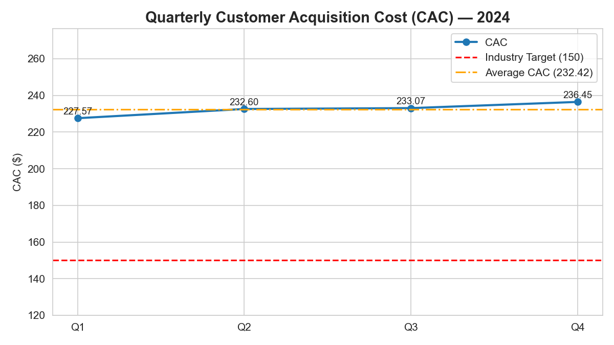

Verification email: 24f2005641@ds.study.iitm.ac.in

The average CAC (232.42) is significantly above the industry target (150), and the upward trend indicates marketing efficiency issues that must be addressed.
Primary strategic recommendation: Optimize digital marketing channels.
This includes reallocating spend toward high-efficiency channels, improving conversion rates with testing, enhancing targeting precision, reducing wasted spend, and increasing investment in organic acquisition channels.